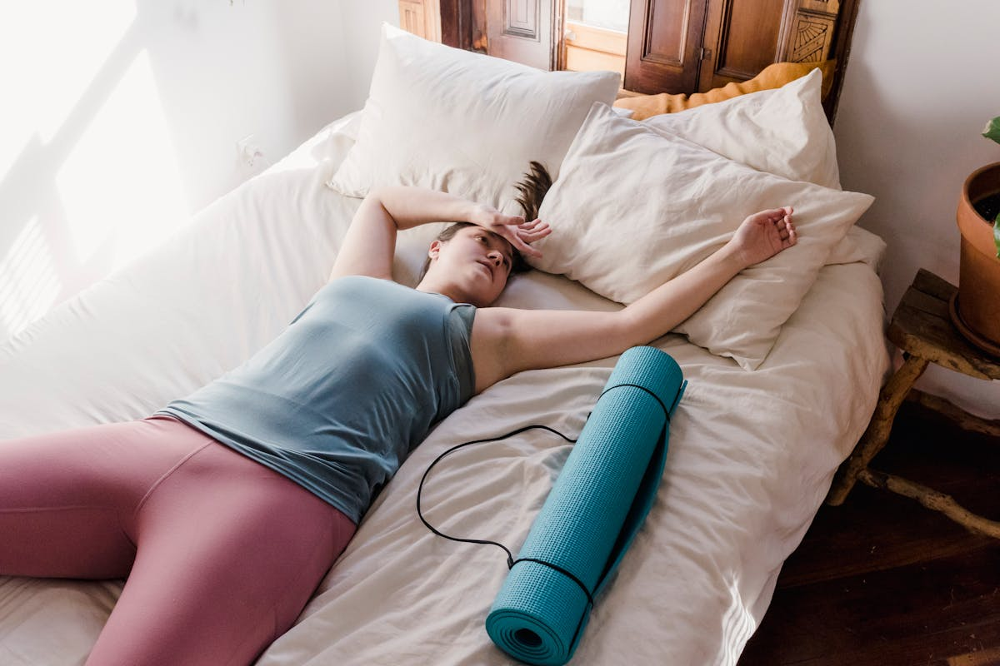

Rund um Nervensystem, energetische Ordnung und innere Veränderung.
Manchmal spürst du dieses leise Ziehen im Brustkorb. Ein Sehnen, das du nicht erklären kannst. Du funktionierst im Alltag, du hast schon so viel erreicht – und doch bleibt da diese Lücke. Diese Sehnsucht ist kein Zufall. Sie ist der Ruf deiner Seele.
Kleine tägliche Rituale, die dich wieder mit dir selbst verbinden – wenn du das Gefühl hast, dich im Trubel des Alltags verloren zu haben.
Ich dachte, ich müsse hart sein, um zu bestehen. Wie ich lernte, dass meine Weiblichkeit keine Schwäche ist – sondern meine tiefste Kraft.
Jahrelang habe ich Rollen gespielt, die nicht zu mir passten. Wie ich meine Masken ablegte und endlich die Frau wurde, die ich wirklich bin.
Warum wiederholen sich bestimmte Muster in deinem Leben? Die Akasha Chronik gibt Antworten – ein persönlicher Einblick in diese heilige Quelle der Weisheit.
Wir tragen nicht nur unsere eigenen Muster – sondern auch die unserer Vorfahren. Wie ThetaHealing® dabei hilft, diese zu erkennen und zu transformieren.
Als mein Leben auseinanderbrach, fand ich durch ThetaHealing® einen Weg zurück zu mir selbst. Eine persönliche Geschichte über Schmerz und Transformation.
Das Gefühl, nicht dazuzugehören, anders zu sein – und wie ich gelernt habe, meine Einzigartigkeit als Geschenk zu sehen.
Loslassen klingt einfach – ist aber eines der mutigsten Dinge, die wir tun können. Ein persönlicher Erfahrungsbericht.
Von der Sehnsucht zur Erfüllung: Wie ich alte Liebeswunden heilte und lernte, mich selbst wirklich zu lieben.
Du liegst im Bett und schläfst nicht. Du machst Urlaub – und dein Körper macht trotzdem nicht Pause. Was das bedeutet und was hilft.
Viele hören den Begriff zum ersten Mal und fragen sich: Was ist das eigentlich? Ein ehrlicher Einblick in die Methode, die im Mittelpunkt meiner Arbeit steht.

Es gibt eine Art von Erschöpfung, die sich nicht durch Schlafen löst. Die bleibt, auch nach dem Urlaub. Die sitzt tiefer – im System selbst.
Was ist ein Seelenpartner wirklich? Nicht der Traumpartner aus dem Film – sondern jemand, der dein energetisches Feld auf eine kaum erklärbare Art berührt.
Bioresonanz ist keine Wundermedizin. Aber sie kann etwas, was viele andere Methoden nicht können: sie liest, was das Körpersystem zeigt.
Warum warten wir so lang? Warum muss es erst „schlimm genug" sein, bevor wir Unterstützung annehmen dürfen? Ein Text über das Erlauben.
„Ich bin nicht gut genug." „Erfolg ist gefährlich." Glaubenssätze sitzen tiefer als der Verstand reicht – deshalb hilft reines Denken oft nicht.
Heilung ist kein Ziel, das man erreicht – sie ist eine lebenslange Reise. Ein persönlicher Einblick in energetische Auflösungsarbeit und inneren Frieden.